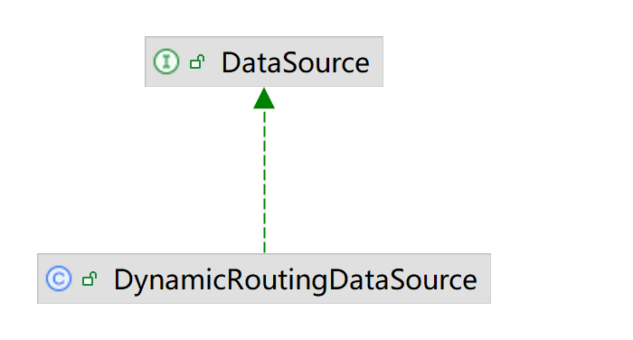

mybatis-plus DataSource 源码分析
简介
javax.sql.DataSource是JDBC规范的一个核心接口，作为 DriverManager 机制的替代方案，用于管理数据库连接。
mybatis的SqlSessionFactory操作数据库就是基于DataSource的实现类，参见org.apache.ibatis.mapping.Environment
public final class Environment {
private final DataSource dataSource;
}
当你使用mybatis作为操作数据库的组件库，需要提供一个DataSource设置到SqlSessionFactory。
如果选择了hikari线程池，实际上就是将hikari的DataSource实现设置到mybatis的SqlSessionFactory
@Bean
public SqlSessionFactoryBean sqlSessionFactory(DataSource dataSource) throws IOException {
HikariConfig config = new HikariConfig();
DataSource dataSource = HikariDataSource(config);
SqlSessionFactoryBean sessionFactory = new SqlSessionFactoryBean();
sessionFactory.setDataSource(dataSource);
return sessionFactory;
}
现实的业务场景可能需要连接多个数据库，就需要引入mybatis-plus的多数据源组件。
mybatis-plus的多数据源DynamicRoutingDataSource也是DataSource的实现，并且集成了各种线程池和p6spy日志功能。
其原理如图所示：

mybatis-plus的DynamicRoutingDataSource，hikari的HikariDataSource，p6spy的P6DataSource如同俄罗斯套娃，通过
DataSource嵌套的方式，实现了多数据源切换，线程池，日志的功能。
创建DataSource
抽象接口的链路设计：
DataSource --> DynamicDataSourceProvider -->DataSourceCreator
DynamicRoutingDataSource
DynamicRoutingDataSource是mybatis-plus的DataSource接口实现

自动装配DynamicDataSourceAutoConfiguration将DynamicRoutingDataSource类注册为DataSource接口类型的Bean到Spring容器
public class DynamicDataSourceAutoConfiguration implements InitializingBean {
@Bean
@ConditionalOnMissingBean
public DataSource dataSource() {
DynamicRoutingDataSource dataSource = new DynamicRoutingDataSource();
//省略...
return dataSource;
}
}
DynamicRoutingDataSource本身不实现数据库操作，而是通过引入其他DataSource实现。
DynamicRoutingDataSource内部方法afterPropertiesSet调用了DynamicDataSourceProvider的loadDataSources方法加载不同的DataSource实现，
@Slf4j
public class DynamicRoutingDataSource extends AbstractRoutingDataSource implements InitializingBean, DisposableBean {
@Autowired
private List<DynamicDataSourceProvider> providers;
/**
* 所有数据库
*/
private final Map<String, DataSource> dataSourceMap = new ConcurrentHashMap<>();
@Override
public void afterPropertiesSet() throws Exception {
// 添加并分组数据源
Map<String, DataSource> dataSources = new HashMap<>(16);
for (DynamicDataSourceProvider provider : providers) {
dataSources.putAll(provider.loadDataSources());
}
for (Map.Entry<String, DataSource> dsItem : dataSources.entrySet()) {
addDataSource(dsItem.getKey(), dsItem.getValue());
}
}
}
DynamicDataSourceProvider
DynamicDataSourceProvider是多数据源加载接口，默认的实现YmlDynamicDataSourceProvider类是从yml信息中加载所有数据源
可以通过实现这个接口并且注册到spring的方式重写数据源加载逻辑

自动装配注册了YmlDynamicDataSourceProvider
public class DynamicDataSourceAutoConfiguration implements InitializingBean {
@Bean
public DynamicDataSourceProvider ymlDynamicDataSourceProvider() {
return new YmlDynamicDataSourceProvider(properties.getDatasource());
}
}
YmlDynamicDataSourceProvider通过其父类AbstractDataSourceProvider的createDataSourceMap方法
调用到DefaultDataSourceCreator接口的createDataSource方法创建数据源
public class YmlDynamicDataSourceProvider extends AbstractDataSourceProvider {
@Override
public Map<String, DataSource> loadDataSources() {
return createDataSourceMap(dataSourcePropertiesMap);
}
}
@Slf4j
public abstract class AbstractDataSourceProvider implements DynamicDataSourceProvider {
@Autowired
private DefaultDataSourceCreator defaultDataSourceCreator;
protected Map<String, DataSource> createDataSourceMap(
Map<String, DataSourceProperty> dataSourcePropertiesMap) {
Map<String, DataSource> dataSourceMap = new HashMap<>(dataSourcePropertiesMap.size() * 2);
for (Map.Entry<String, DataSourceProperty> item : dataSourcePropertiesMap.entrySet()) {
String dsName = item.getKey();
DataSourceProperty dataSourceProperty = item.getValue();
String poolName = dataSourceProperty.getPoolName();
if (poolName == null || "".equals(poolName)) {
poolName = dsName;
}
dataSourceProperty.setPoolName(poolName);
dataSourceMap.put(dsName, defaultDataSourceCreator.createDataSource(dataSourceProperty));
}
return dataSourceMap;
}
}
DataSourceCreator
DataSourceCreator是不同DataSource的创建接口，选用hikariDataSource,对应就是由HikariDataSourceCreator创建
可以通过实现自己的DataSourceCreator增加数据源，或者覆盖默认的数据源创建器

自动装配将HikariDataSourceCreator类注册为DataSourceCreator接口类型的Bean到Spring容器
public class DynamicDataSourceCreatorAutoConfiguration {
@ConditionalOnClass(HikariDataSource.class)
@Configuration
static class HikariDataSourceCreatorConfiguration {
@Bean
@Order(HIKARI_ORDER)
public HikariDataSourceCreator hikariDataSourceCreator() {
return new HikariDataSourceCreator();
}
}
@Primary
@Bean
@ConditionalOnMissingBean
public DefaultDataSourceCreator dataSourceCreator(List<DataSourceCreator> dataSourceCreators) {
DefaultDataSourceCreator defaultDataSourceCreator = new DefaultDataSourceCreator();
defaultDataSourceCreator.setCreators(dataSourceCreators);
return defaultDataSourceCreator;
}
}
多个注册的DataSourceCreator，List
public class DynamicDataSourceCreatorAutoConfiguration {
@Primary
@Bean
@ConditionalOnMissingBean
public DefaultDataSourceCreator dataSourceCreator(List<DataSourceCreator> dataSourceCreators) {
DefaultDataSourceCreator defaultDataSourceCreator = new DefaultDataSourceCreator();
defaultDataSourceCreator.setCreators(dataSourceCreators);
return defaultDataSourceCreator;
}
}
DefaultDataSourceCreator的createDataSource方法循环调用DataSourceCreator接口实现类的createDataSource方法
特别的，如果你实现了的DataSourceCreator和系统默认实现是同一个，比如都是hikari，并且注册了，那么这里使用顺序靠前的那个创建器
public class DefaultDataSourceCreator {
private List<DataSourceCreator> creators;
public DataSource createDataSource(DataSourceProperty dataSourceProperty) {
DataSourceCreator dataSourceCreator = null;
for (DataSourceCreator creator : this.creators) {
if (creator.support(dataSourceProperty)) {
dataSourceCreator = creator;
break;
}
}
if (dataSourceCreator == null) {
throw new IllegalStateException("creator must not be null,please check the DataSourceCreator");
}
return dataSourceCreator.createDataSource(dataSourceProperty);
}
}
DataSourceCreator接口实现类的createDataSource方法会先调用其父类AbstractDataSourceCreator的createDataSource方法
AbstractDataSourceCreator的createDataSource方法调用的wrapDataSource方法实现了p6spay数据源的包裹
mybatis-plus是在这里实现对p6spy功能的整合
@Slf4j
public abstract class AbstractDataSourceCreator implements DataSourceCreator {
@Override
public DataSource createDataSource(DataSourceProperty dataSourceProperty) {
DataSource dataSource = doCreateDataSource(dataSourceProperty);
return wrapDataSource(dataSource, dataSourceProperty);
}
private DataSource wrapDataSource(DataSource dataSource, DataSourceProperty dataSourceProperty) {
DataSource targetDataSource = dataSource;
Boolean enabledP6spy = properties.getP6spy() && dataSourceProperty.getP6spy();
if (enabledP6spy) {
targetDataSource = new P6DataSource(dataSource);
}
return new ItemDataSource(name, dataSource, targetDataSource, enabledP6spy, enabledSeata, seataMode);
}
}
HikariDataSourceCreator
HikariDataSourceCreator负责创建HikariDataSource
public class HikariDataSourceCreator extends AbstractDataSourceCreator implements DataSourceCreator, InitializingBean {
@Override
public DataSource doCreateDataSource(DataSourceProperty dataSourceProperty) {
HikariConfig config = MERGE_CREATOR.create(gConfig, dataSourceProperty.getHikari());
//省略。。。
HikariDataSource dataSource = new HikariDataSource();
//省略。。。
return dataSource;
}
}
DriverDataSource
hikari的DriverDataSource类构造方法加载指定的JDBC实现作为操作数据库的驱动
package com.zaxxer.hikari.util;
public final class DriverDataSource implements DataSource {
public DriverDataSource(String jdbcUrl, String driverClassName, Properties properties, String username, String password)
{
driver = DriverManager.getDriver(jdbcUrl);
}
}
DataSource注入SqlSessionFactory
主要的调用链路如下
SqlSessionTemplate --> SqlSessionFactory --> DynamicRoutingDataSource
MybatisPlusAutoConfiguration这个自动装配将DynamicRoutingDataSource设置到SqlSessionFactory，完成和mybatis的DataSource整合
public class MybatisPlusAutoConfiguration implements InitializingBean {
@Bean
@ConditionalOnMissingBean
public SqlSessionFactory sqlSessionFactory(DataSource dataSource) throws Exception {
MybatisSqlSessionFactoryBean factory = new MybatisSqlSessionFactoryBean();
factory.setDataSource(dataSource);
// 省略
return factory.getObject();
}
@Bean
@ConditionalOnMissingBean
public SqlSessionTemplate sqlSessionTemplate(SqlSessionFactory sqlSessionFactory) {
ExecutorType executorType = this.properties.getExecutorType();
return executorType != null ? new SqlSessionTemplate(sqlSessionFactory, executorType) : new SqlSessionTemplate(sqlSessionFactory);
}
}